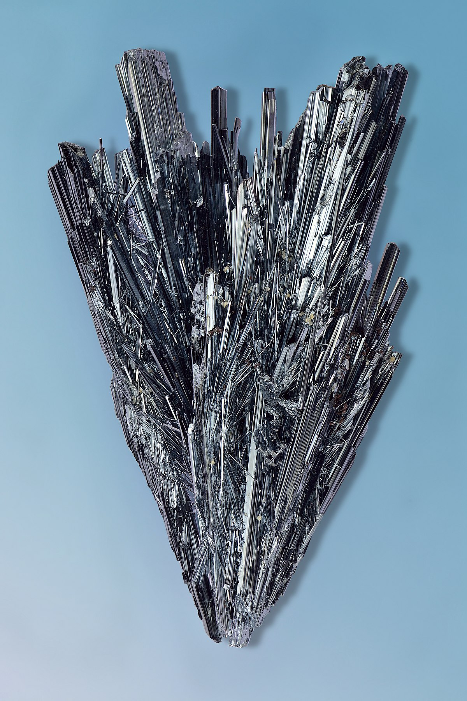

| Property |
Value |
| Element Name |
Antimony |
| Atomic Mass |
121.76 u |
| Atomic Number |
51 |
| Number of Isotopes |
37 |
| Mass Number |
121 |
| Melting Temperature |
630.6 °C |
| Boiling Temperature |
1587 °C |
| Density |
6.69 g/cm³ |
| Electronegativity |
2.05 |
| Year of Discovery |
1600 BC |
| Abundance in Earth's Crust |
0.00002% |
| Characteristics |
- Chemically stable but reacts with oxygen at high temperatures.
- Exists in various allotropic forms; the most stable is rhombic crystalline.
- Toxic in high quantities.
- Used in metal alloys, flame retardants, pigments, and electronic devices.
|
| Technological Applications |
Used in flame retardants, alloys (lead-acid batteries, bearing metals), semiconductors, and match industries. |
| Major Deposits Location |
China, Russia, Bolivia, Kyrgyzstan. In Italy, the Su Suergiu mine in Sardinia was the most important. |
| Health Effects |
Exposure can cause irritation to the eyes, skin, and lungs, along with potential cardiac, pulmonary, and gastrointestinal issues. |
| Environmental Effects |
Can cause soil and water pollution, toxicity to wildlife, and potential health risks through exposure. |
